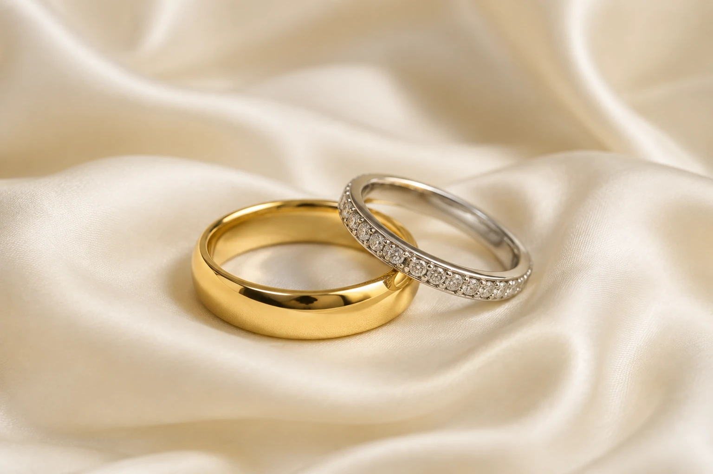

01 / Die FormSo individuell
So individuell
wie Ihre Hand.
Schmal oder markant, sanft gerundet oder mit klarer Kante: Ein Ring soll Ihnen gefallen und sich jeden Tag gut anfühlen.
Profile ausprobieren


Startseite · Trauringe
Ein Trauring wird jeden Tag getragen – jahrzehntelang. Deshalb entscheidet am Ende nicht der Katalog, sondern wie er sich am Finger anfühlt. Hier sehen Sie, was bei uns in der Vitrine liegt.
Bicolor oder einfarbig, poliert oder mattiert, mit Brillanten oder ganz ruhig. Jedes Modell fertigen wir in Gelb-, Weiß- oder Rotgold und in Ihrer Breite.
Die Abbildungen zeigen die Modelle, nicht den tagesaktuellen Bestand. Was gerade im Haus ist, sehen Sie am besten bei uns in der Wellritzstraße.
Form, Goldton und Oberfläche machen aus zwei Ringen Ihr Paar.
Schmal oder markant, sanft gerundet oder mit klarer Kante: Ein Ring soll Ihnen gefallen und sich jeden Tag gut anfühlen.
Profile ausprobieren
Kein Finger ist wie der andere. Wir nehmen uns die Zeit, bis Ihr Ring sitzt – und nicht nur passt.
Anprobe vereinbaren
Ein warmes Gold, ein feiner Brillant, eine persönliche Gravur. Sie entscheiden, welche Details Ihre Geschichte erzählen.
Ihr Paar gestaltenLegierung, Profil, Breite, Oberfläche, Steinbesatz und Gravur – Sie stellen Ihr Paar am Bildschirm zusammen und sehen jede Entscheidung sofort am dreidimensionalen Ring. Am Ende schicken Sie uns Ihre Zusammenstellung oder bringen sie einfach mit.